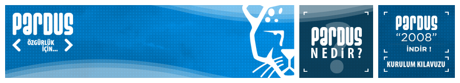
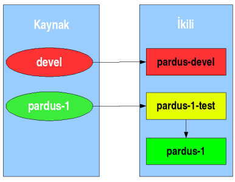

 Önceki sayfa Önceki sayfa
|
 Başlangıç Başlangıç
|
Sonraki sayfa
|
Pardus Depo Politikası
T. Barış Metin
Belge Pardus paket depolarını ve bu depolar üzerinde uyulması gereken kuralları listeler.Belge yalnızca bir kullanım alanına yönelik hazırlanan Pardus işletim sistemi dağıtımı için kuralları tarif eder. Farklı kullanım alanlarına yönelik, farklı Pardus dağıtımları (Pardus, Pardus Sunucu, vb.) bulunabilir. Belgede anlatılan kurallar her Pardus dağıtımı için ayrı ayrı uygulanır.
3 İkili paket depoları
İkili paket depoları PİSİ paketlerinin derlenmiş ve kuruluma hazır hallerinin bulunduğu depolardır. Pardus içerisinde o sıradaki dağıtım sürümü tarafından kullanılan üç ikili depo vardır:- Kararlı (stable) depo
- Kararlı depo için test deposu
- Geliştirme (development) deposu
İkinci depo ise kararlı sürüme aktarılmak üzere hazırlanmış olan paketlerin test edildiği depodur. İkili paketler kararlı sürüm deposuna aktarılmadan önce bu test deposuna aktarılır ve test edilmeleri beklenir. Her paket için en az test süresi, depo sorumlusunun insiyatifi saklı tutularak, 2 haftadır. Güvenlik güncellemeleri bu sınırın dışında tutulur.
Geliştirme deposu ise bir sonraki kararlı sürüm için hazırlanmakta olan PİSİ paketlerini içerisinde barındırır.

|
Önceki sayfa
|
Başlangıç
|
Sonraki sayfa
|

Bu web sitesinde bulunan bilgi ve belgelerin, kaynak gösterilmek koşulu ile kullanılması serbesttir.
Pardus markası ve logotipi TÜBİTAK'ın tescilli markasıdır. Kullanım koşulları için Yasal Uyarı bölümünü inceleyiniz.
Pardus hakkında merak ettikleriniz için lütfen yardım sayfasına başvurun.
TÜBİTAK - UEKAE, PK.74 41470, Gebze / Kocaeli.